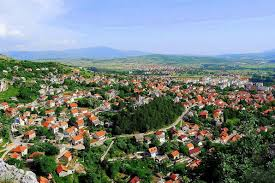

|  | Livno je grad u jugozapadnom dijelu Bosne i Hercegovine. Najznačajniji je grad u Hercegbosanskoj županiji, čije je kulturno i gospodarsko središte, te je drugi po veličini grad s većinskim hrvatskim stanovništvom u Bosni i Hercegovini. Grad leži na 724 m nadmorske visine na istoku centralnog dijela Livanjskog polja, većim dijelom na obroncima i u podnožju brda Bašajkovac, iz kojeg izvire i krška rijeka Bistrica. KlimaKlima je umjereno kontinentalna s jakim vjetrovima. Prosječna godišnja temperatura zadnjih 57 godina (1951. - 2008.) iznosi 9,3°C. Ljeta su mahom duga i sunčana (2008: 2.474 sati), zime snježne. |